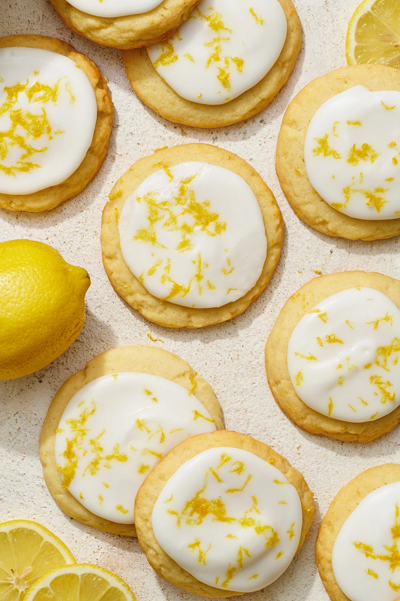

These lemon cookies are fire.. Trust me
Ingredients for lemon cookies:
- All purpose flour
- Baking powder
- Salt
- Butter
- Sugar
- Lemon zest
- Egg
- Parmesan Cheese
Ingredients for lemon glaze:
- Powdered sugar
- Lemon juice
- Additional lemon zest
Instructions:
- Preheat oven
- Mix the dry ingredients: In the bowl of a stand mixer fitted with the paddle attachment, beat together the butter, sugar, and lemon zest on medium-high speed, until light and fluffy.
- Cream the butter,sugar, and lemon zest: Beat in egg until well combined. Scrape down the bottom and sides of the bowl.
- Combine the wet ingredients and dry ingredients: On low speed, add the flour mixture and blend until just incorporated.
- Portion out and flatten out the dough balls: Using a medium spring-loaded cookie scoop, drop 1 ½-tablespoon sized balls of cookie dough onto prepared baking sheets, spacing 2 inches apart. Roll each ball with your palms, then using your palm, gently flatten the dough to about 1/3-inch thick.
- Bake: In preheated oven for 12-14 minutes or until cookies are just set and slightly golden brown at the edges. Cool cookies on their baking sheet for 5 minutes before transferring to a wire rack to cool completely.
- Make the glaze: In a medium bowl, whisk together powdered sugar and lemon juice until a very thick but pourable glaze forms.
- Glaze the cookies: Spoon each cooled cookie with the lemon glaze. Garnish with extra lemon zest, if desired.
Return to top
Return to Main Page